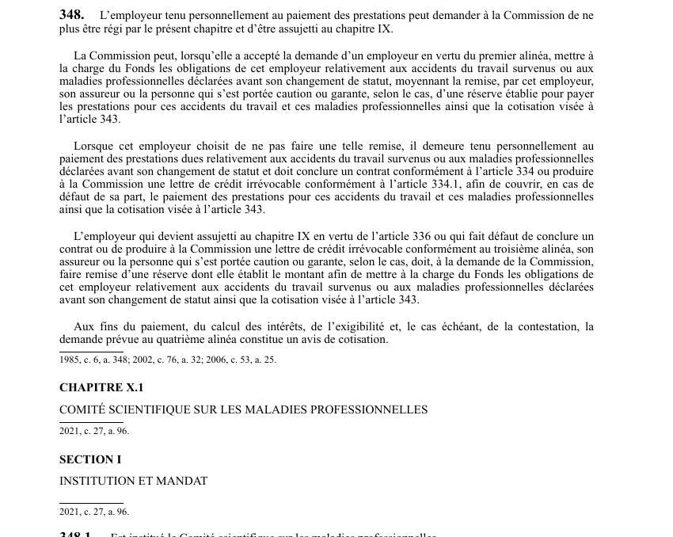

art-348-LATMP : Commission
Un article du wiki ⚖️ Recueil législatif
En bref
L'employeur tenu personnellement au paiement des prestations peut demander a la Commi plus étre régi par le présent chapitre et d'étre assujetti au chapitre IX.
🌐 LegisQuébec · 📄 PDF officiel (page 88)
Texte officiel : capture du PDF
{kind=link}

Toucher l'image pour l'agrandir🔗 Ouvrir a cette page : LATMP.pdf : page 88 · texte a jour au 20 février 2024
Voir aussi
- 🔢 Sous-article : art. 348.1 · institué comité scientifique maladies.
- 🔢 Sous-article : art. 348.2 · le Comité a pour mandat de faire des recommandations et de conseiller le ministre ou la ‘Commission en matiére de maladies professionnelles, notamment:.
- 🔢 Sous-article : art. 348.3 · obligation : les avis et recommandations du Comité scientifique sur les maladies professionnelles sont transmis à la CNESST et au ministre.
- 🔢 Sous-article : art. 348.4 · le Comité est composé de cing membres nommés par le gouvernement 4 la suite d'un appel de candidatures et aprés consultation des ordres professionnels concernés et du Comité consultatif du travail.
- 🔢 Sous-article : art. 348.5 · le mandat du président et des membres du Comité scientifique sur les maladies professionnelles est d'au plus cinq ans, renouvelable.
- 🔢 Sous-article : art. 348.6 · toute vacance survenant au cours du mandat des membres du Comité scientifique est comblée en suivant le mode de nomination prévu pour la nomination du membre à remplacer.
- 🔢 Sous-article : art. 348.7 · le président du Comité scientifique transmet chaque année à la CNESST et au ministre, à la date fixée par ce dernier, un rapport des activités du Comité, contenant les renseignements exigés par le ministre.
- 🔢 Sous-article : art. 348.8 · obligation : commission assure financement dépenses.
- 🔢 Sous-article : art. 348.9 · interdiction : membre comité ne peut.
- 🔧 Modifié par : LMRSST art. 96 · insère une nouvelle disposition dans la LATMP.
- ↑ Loi : LATMP
Pages qui pointent ici (2)
- art-96-LMRSST : insertion après art. 348 LATMP Recueil législatif
- LMRSST : Chapitre I : Modifications à la LATMP Recueil législatif